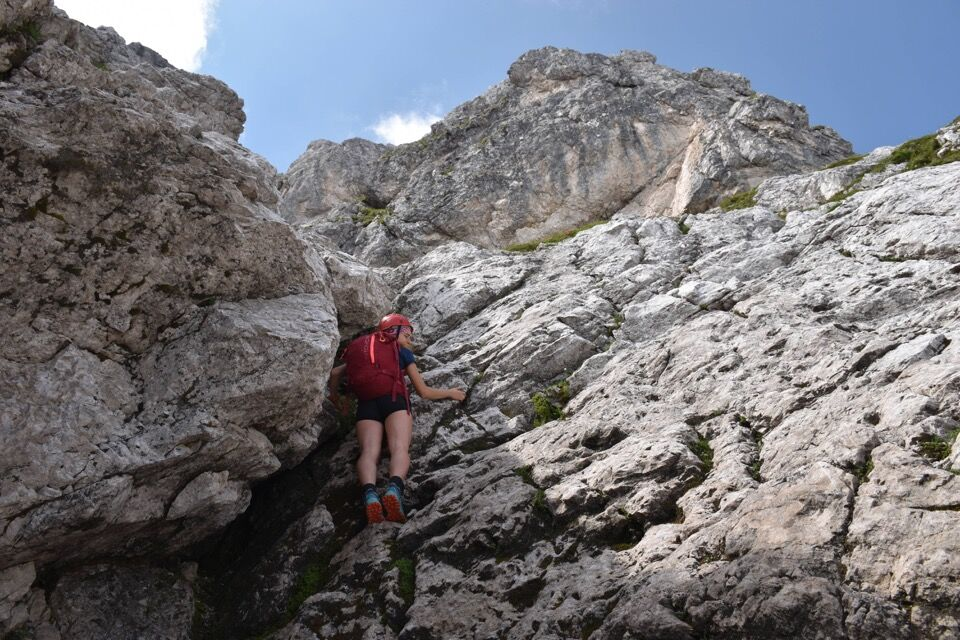
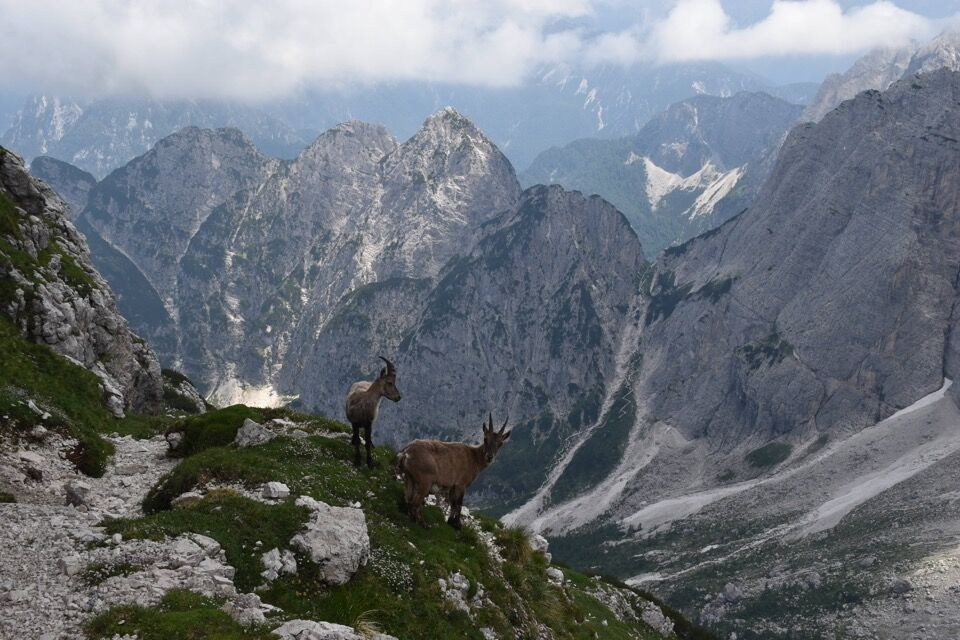
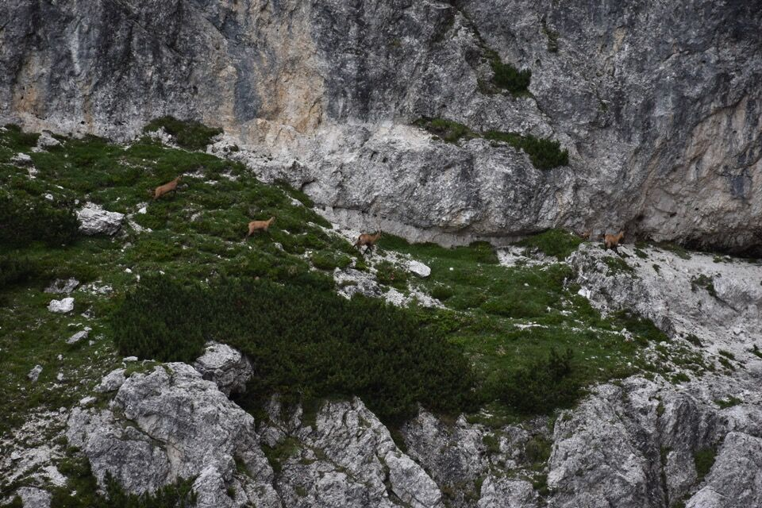
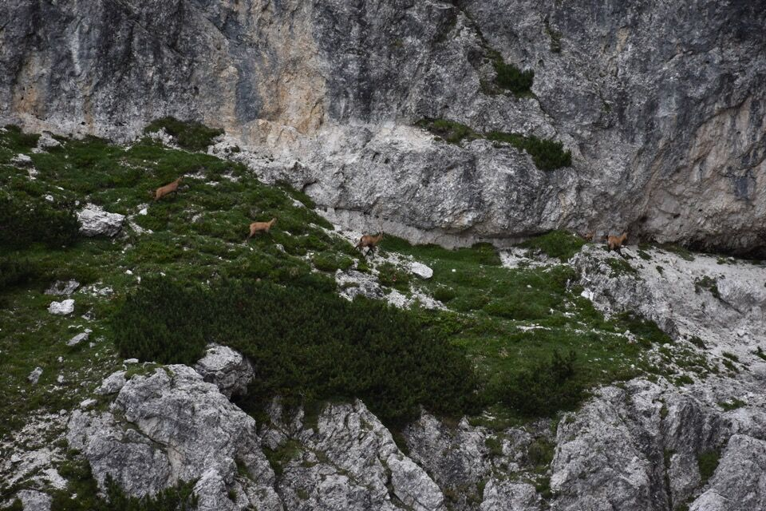
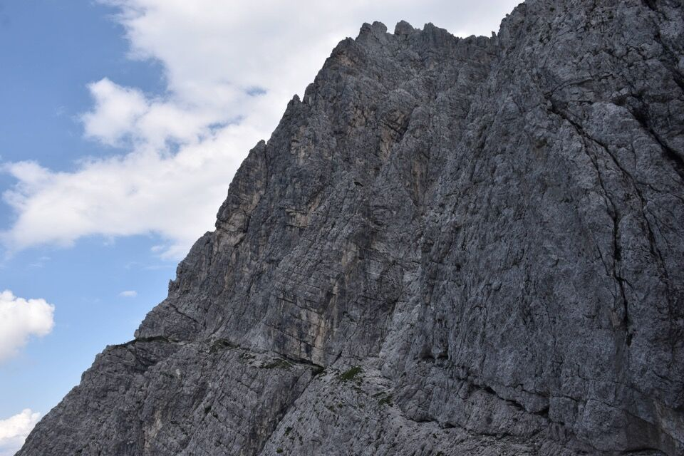

Giro di una bellezza unica ma parecchio impegnativo per via di alcuni passaggi assolutamente alpinistici sulla cengia.
A fine giornata ci renderemo conto di aver percorso in una volta sola tutte le quattro vie escursionistiche del Nabòis! Ovvero la via Nord, la via normale fino a sella Nabòis, la Cengia dei camosci e il sentiero della cresta Est.(*)
Umore pessimo alla partenza per via del cielo plumbeo e le nubi basse... per fortuna il tempo diventerà bellissimo al pomeriggio.
In foto il Piccolo Nabòis.
Curioso incontro con un solitario ravanatore austriaco in cerca di avventure proprio sul Piccolo Nabòis!
Noi invece proseguiamo per la via Nord, aperta da Bolaffio e Oitzinger (storiche guide di Kugy) il 2 settembre 1901, mentre si recavano al bivacco precedente la prima salita della parte Nord dello Jôf Fuart (sic!).
Ottima visibilità comunque eh!
Non so rendere a parole lo stupore e la gioia che si provano quando improvvisamente le nuvole si diradano.
Restiamo senza parole davanti a tanta bellezza.
Nella parte finale, che tutti descrivono come poco chiara, ci alziamo verso destra: buona scelta perché così si arriva diretti in cima.
Poco dopo arriva in cima anche Davide di Treviso, grande conoscitore dei monti del Friuli, con cui facciamo conoscenza. Grazie della foto!
Lo Jôf Fuart è così vicino che sembra di poterlo toccare: impossibile non fantasticare sulla cengia degli Dei.
Laggiù Valbruna. Che gioia che il tempo sta migliorando!
Il Piccolo Nabòis: io credo che dalla sella a Sud di questo un modo di salirci ci sia, essendo pieno di mughi; la parte difficile deve essere quella più bassa.
Ho visto un camoscio sulla cengia a sx sotto la cima.
Scendiamo a sella Nabòis.
M'incuriosisce quel sentierino con tanto di scaletta di guerra che dalla sella sale verso la cima: questione da approfondire.
L'inizio della cengia: sette bolli rossi. Certa gente è da rinchiudere.
 

Stupendo quando si cambia versante, con vista su Valbruna.

Iniziano i passaggi difficili.
Per canto mio è impensabile non legarsi.
Punto in cui sono andato un po' in crisi: impossibile traversare fino in fondo, ci ho provato più volte sia stando alto che stando basso; alla fine ci siamo calati nel canale che poi abbiamo risalito un po'. Dopo c'è un passaggino di III.
Ma il punto più difficile è proprio alla fine: sullo spigolo c'è un tetto, sotto cui bisogna traversare, ed è un tratto di III in esposizione massima; francamente, per le mie scarse capacità alpinistiche, l'ho trovato difficile (almeno andando da primo).
Ed eccoci di nuovo nello stesso punto (via Nord) in cui eravamo molte ore prima! Ma ora con una luce stupenda. Verrebbe quasi voglia di ritornare su...
Ora invece continuiamo per la cengia (meno marcata) fino alla cresta Est.
Sompdogna.
Appena girato l'angolo, montati sulla cresta Est, ci appare immensa e magnifica la parte Nord del Fuart.
Con la luce della sera, è stato uno spettacolo difficile da dimenticare.
Cima di Riofreddo, Innominata e Madri dei Camosci, sottolineate dalla Cengia degli Dei.
Al limite dello sfinimento per disidratazione (almeno io!), scendiamo al Pellarini lungo la cresta Est. Non so che senso abbia chiamare questo sentiero con la parola "alpinistico".
(*) Intendo le quattro vie generalmente note: è ovvio che potrebbe esserci dell'altro, ad esempio non ho dubbi che si possa salire alla cengia dalla bassa Spragna lungo lo spallone Ovest del Gran Nabòis con percorso da camosci (vedi foto, scattata dallo Jôf di Sompdogna).